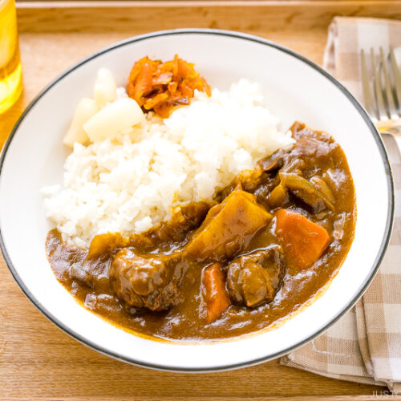

Jeff's Just Okay Beef Curry

Honestly, its just okay!
While there are a few steps to this beef curry recipe, it's easy to make and has so much
flavor. This dish can be made ahead of time and freezes well either before or after
baking!
The best beef curry recipe is made with ingredients that you know, and it’s not difficult
at all! All you’ll need for this easy beef curry recipe is like, a dutch oven or something!
Ingredients
- Beef
- Onions
- Potatoes
- Carrots
- Curry Roux (prepackaged any brand is fine)
Steps
- Sear beef in dutch oven over medium heat
- Once seared, remove beef and cook vegetables in same pan. Do not drain pan!
- When onions are translucent, add beef back to pot with enough water to cover everything. Simmer for approx. 20 min
- Turn off heat and add curry roux, stirring periodically until roux is thickened about 5-7 min
- Let set for 10 min and enjoy!